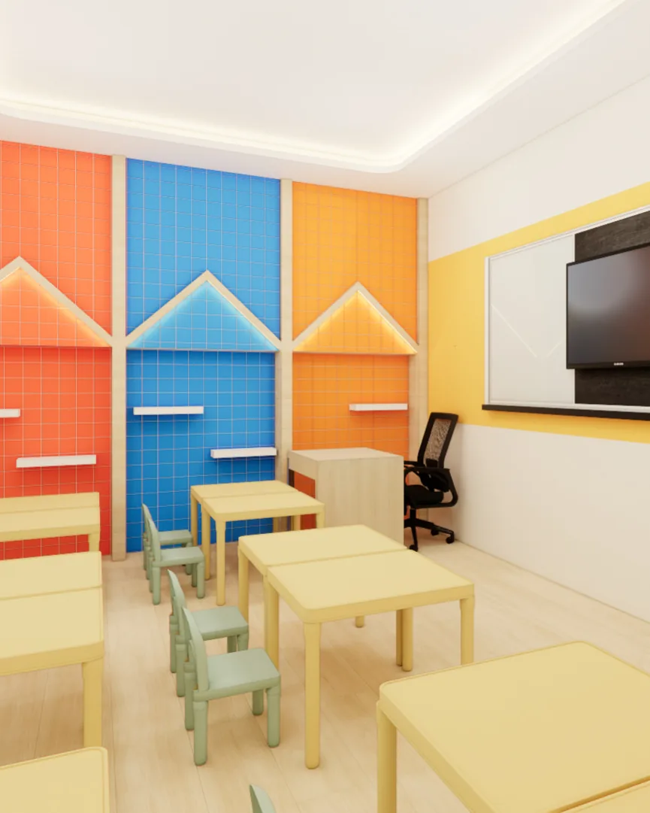

Langsung ke isi
lanaspace: portofolio Maulana Aziz Saputra, desainer arsitektur dan interior
lanaspace
l
a
n
a
s
p
a
c
e
: tentang Maulana Aziz Saputra
→
Maulana Aziz Saputra
Arsitektur
Desain interior
Kontak
maulanaazizsaputra.baylana@gmail.com
+62 857 1774 2170
Terhubung
LinkedIn
Waktu setempat
Pengunjung
1
sedang melihat ·
0
total
Karya
K
a
r
y
a
: 8 proyek
→
Pinakular House
TP House
Como House
Taman Medyra
Hong Hua Mandarin: Arsitektur
Bank Mandiri Syariah

Hong Hua Mandarin: Interior
Paragon
Pinakular House
TP House
Como House
Taman Medyra
Hong Hua Mandarin: Arsitektur
Bank Mandiri Syariah
Hong Hua Mandarin: Interior
Paragon
Lainnya
L
a
i
n
n
y
a
: gambar kerja dan sketsa tangan
→
Cara tercepat saya membaca suasana ruang.
Foto latar
Paragon. Gerbang organik menuju area pajang
Animasi:
penuh